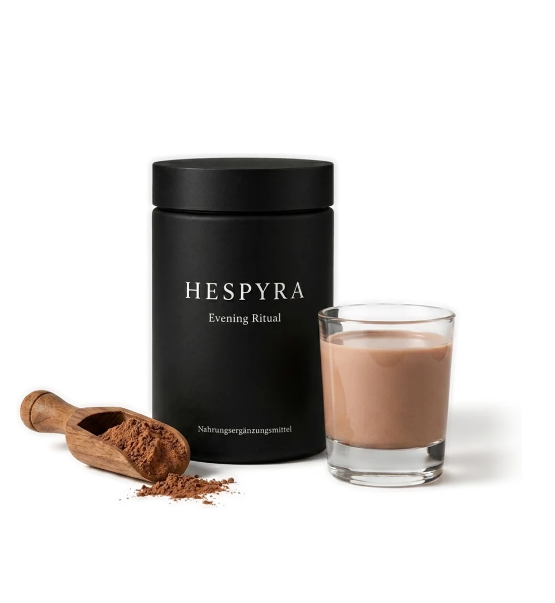
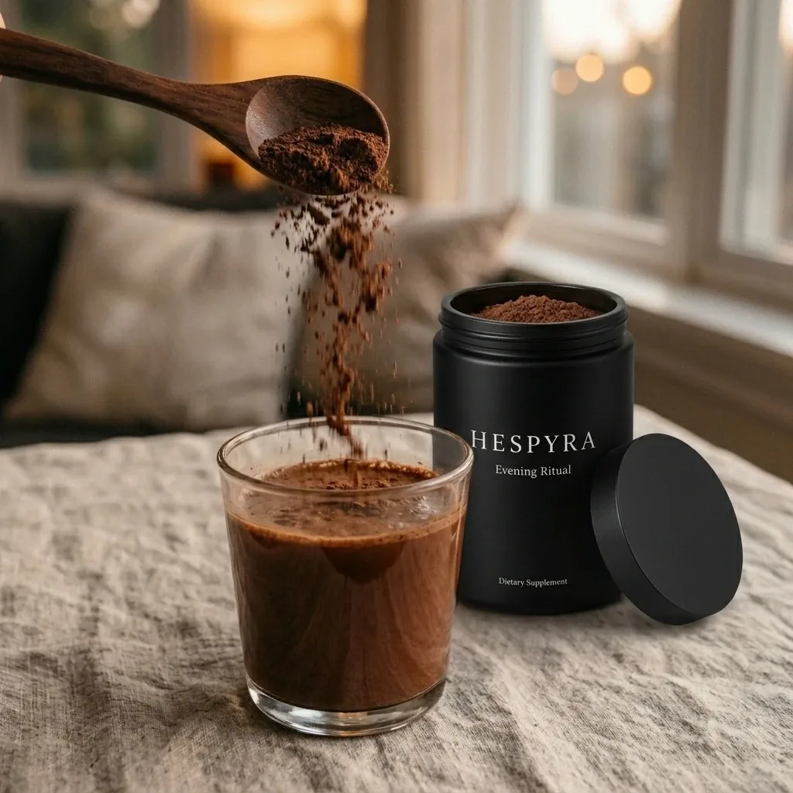
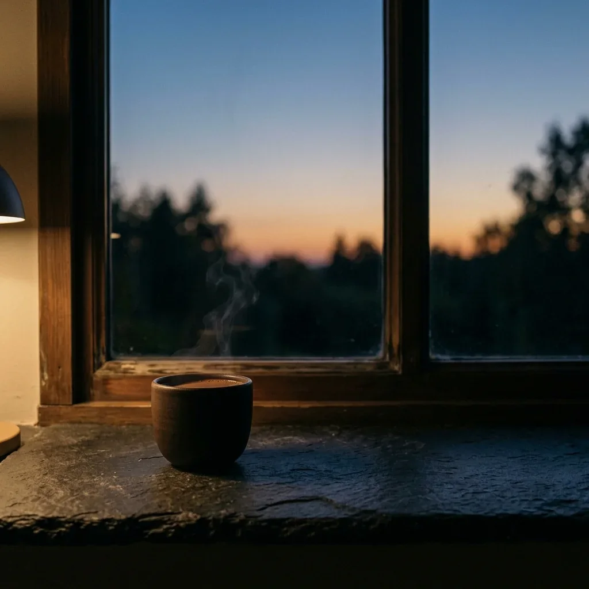
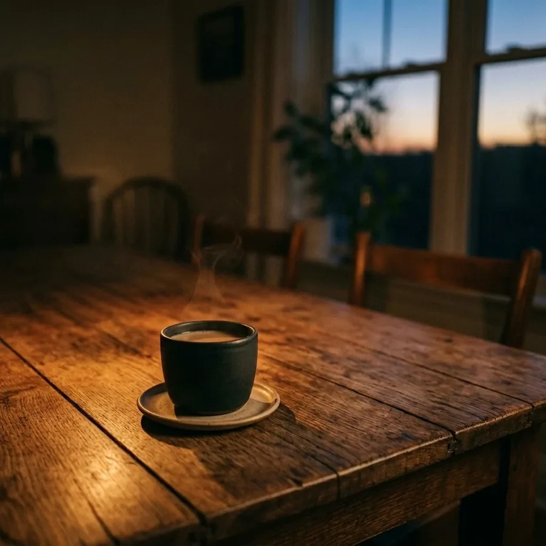
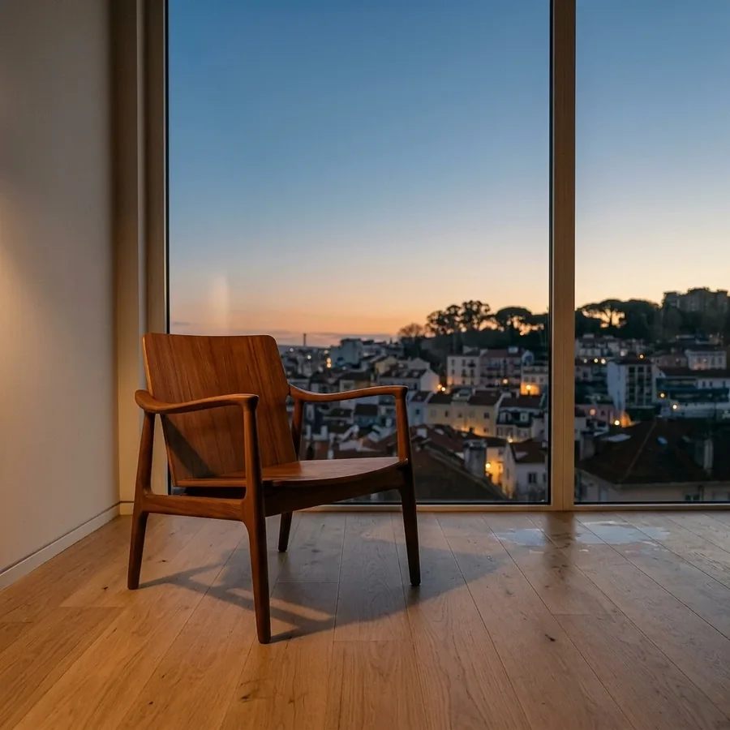

Ein Abenddrink für den Moment davor
Nicht für den Schlaf. Für den Moment davor.
Für Menschen, deren Tag nicht von selbst aufhört.
HESPYRA ist ein tägliches Abendritual: ein Kakao-Drink ohne Melatonin, für den Übergang vom Tag in einen ruhigeren Abend.
HESPYRA ist ein Abenddrink für den Moment davor — ein tägliches Pulverritual zwischen Tag, Abend und Ruhe.

Der Moment davor
Der Tag ist vorbei. Aber nicht in dir.
Du liegst im Bett, aber der Kopf macht weiter. Noch eine Mail im Hinterkopf, noch ein Gedanke an morgen. Der Körper ist müde — abschalten ist trotzdem eine andere Sache.
Du bist zuhause. Aber innerlich noch in Gesprächen, Nachrichten, Entscheidungen, To-dos. Der Abend ist da — nur du bist noch nicht angekommen. HESPYRA beginnt genau dort: in dem Moment, in dem der Tag nicht einfach von selbst endet.

Das Ritual
Ein Glas, das den Übergang markiert.
Lösen
Nicht alles aus dem Tag mitnehmen. Ein Löffel, warmes Wasser, eine Minute — langsam verrührt als erste Geste zum Tagesende.
Sammeln
Vom Reagieren zurück zu dir. Das warme Glas in den Händen, Kakao, Vanille und Tonka geben dem Moment eine ruhige Tiefe.
Ankommen
Langsam getrunken, beginnt der Abend. Ein Glas, das den Übergang markiert — Tag für Tag, auf dieselbe ruhige Weise.
Die Komposition
Eine Komposition für den Abend.
HESPYRA verbindet warmen Geschmack mit einer transparenten Rezeptur. Nicht zum Ausschalten gedacht, sondern als bewusstes Ritual für den Moment davor.
- Magnesium Magnesium trägt zu einer normalen Funktion des Nervensystems bei.
- Formen & Dosierung Sichtbar gemacht, sobald die Rezeptur final ist.
- Ausgewählte Pflanzenstoffe Sorgfältig gewählt als Teil der ersten Edition.
- Offenlegung zum Launch Alle Bestandteile werden vor Veröffentlichung transparent gemacht.
- Kakao Wärme und Substanz, nicht zu süß.
- Vanille & Tonka Damit das Ritual jeden Abend wiederholbar wird.
Die finale Rezeptur wird vor dem Launch vollständig offengelegt — inklusive Formen und Dosierungen. Keine proprietären Mischungen. Keine versteckten Füllstoffe. Die Komposition ist die Begründung. Das Ritual ist der Grund.
Ein anderes Glas
Nicht jeder Abend braucht mehr Ablenkung.
Nicht jeder Abend braucht noch ein Glas Wein.
Nicht jeder Abend muss im Scrollen verschwinden.
Manchmal genügt ein anderes Glas: warm, bewusst, wiederholbar.
HESPYRA ist kein Verzicht. Es ist ein anderer Anfang.

Abendkultur
Der Abend ist mehr als die Zeit vor dem Schlaf.
Er kann still sein oder lebendig. Allein oder mit anderen. Entscheidend ist nicht, wie der Abend aussieht — sondern dass er nicht nur der Rest des Tages bleibt. HESPYRA ist das kleine Ritual, das diesen Raum eröffnet.

Am Tisch
Mit anderen, ohne Anlass. Gespräche, Familie, ein gemeinsamer Moment.

Auf dem Balkon
Draußen, mit Musik oder Stille. Der Abend, der wieder einem selbst gehört.

Für sich
Der erste ruhige Moment des Abends — Anfang statt Rest des Tages.
Entwickelt mit Sorgfalt
Das Gegenteil einer schnellen Lösung.
HESPYRA entsteht aus der Überzeugung, dass ein Abendritual nicht laut auftreten muss. Die erste Edition wird geschmacklich, im Aroma und in ihrer Komposition mit Ruhe entwickelt — als bewusster Beginn, nicht als schneller Effekt.
Entwickelt aus Gesprächen mit Menschen, deren Tag im Kopf länger dauert als im Kalender — nicht aus einem Trendbriefing.
Profound Formulas
Hinter der Rezeptur steht Christian Baker, Gründer von Profound Formulas. In sechzehn Jahren hat er Formeln für einige der größten Namen der Branche entwickelt — und bringt dieselbe Sorgfalt in ein Produkt ein, das bewusst leise auftritt.
Fragen
Was sich zu wissen lohnt, bevor der Abend beginnt.
Erste Edition
Die erste Edition von HESPYRA entsteht.
Für Menschen, deren Tag nicht von selbst aufhört. Begleite den Anfang — mit Einblicken in Entwicklung, Geschmack und Launch.